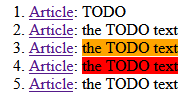

Home
Categories
Dictionary
Download
Project Details
Changes Log
What Links Here
How To
Syntax
FAQ
License
TODO system
The TODO element allows to add a "TODO" in the wiki. The todolist element allows to add a list of all TODOs found in the wiki (which is a list of all the "todo" elements found in the wiki with their associated article.
Adding todos and using the "todolist" element allows to show a comprehensive list of all things you still need to do in your wiki, in one place.
If this property is set to false:

And the following todolist result:
Adding todos and using the "todolist" element allows to show a comprehensive list of all things you still need to do in your wiki, in one place.
Not showing TODOs
By default TODOs are present in the generation of the wiki, but it is possible to remove them by setting the command-line includeTODO property or the associated configuration file property.If this property is set to false:
- TODOs will not be included in the wiki
- The todolist element will not be included in the wiki
- But the todo property will still have the expected value, taking into account all TODOs found in the wiki source
Example
The following content:An empty todo: <todo/> A todo with a text: <todo text="the TODO text"/> An important todo: <todo text="the TODO text" importance="important"/> A critical todo: <todo text="the TODO text" importance="critical"/> A todo with all attributes: <todo text="the TODO text" reason="because I want" date="2024-10-12" author="Paul"/>Will produce the following result:
And the following todolist result:

See also
- TODO: The "todo" element allows to add a "TODO" in the wiki
- todolist: This article explains the XML tags which can be used to specify the articles syntax
- Review system: This article is about the review system
- Syntax: This article explains the XML tags which can be used to specify the articles syntax
- Syntax overview: This article presents an overview of the tags supported in the XML syntax
×

Categories: Syntax